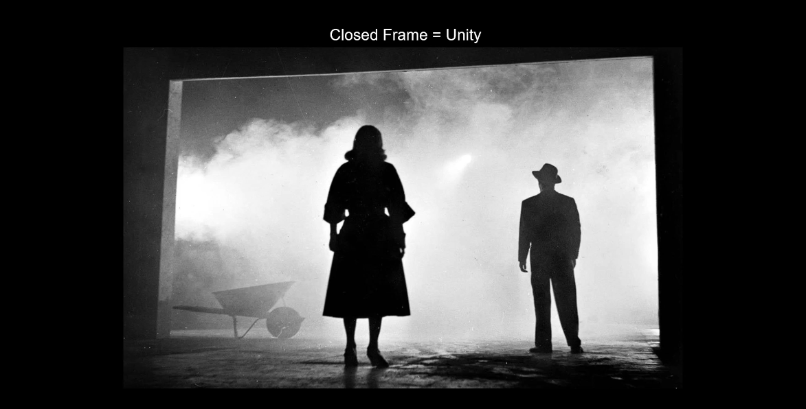
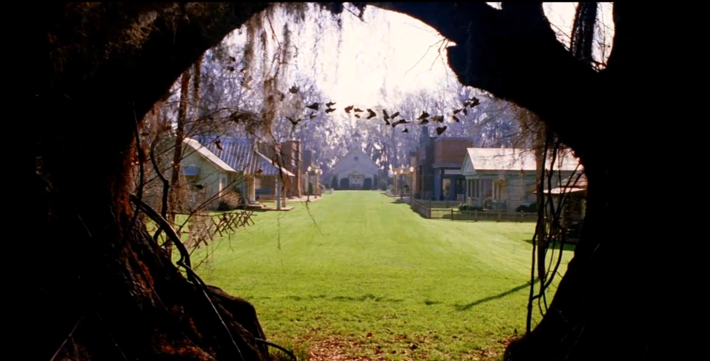

사각형 (Square)
- 사각형/정사각형은 안정감을 준다.
- 친근함, 믿음, 정직함이 표현된다.
- 질서, 수학, 합리성, 형식적인 감정을 전해준다.
- 지표면을 상징한다.

원 (Circle)
- 친근하고 안전한 감정을 유발한다.
- 완벽함, 완전함의 의미를 가진다.
- 무한함, 영원함을 상징한다.
삼각형 (Triangle)
- 긴장감을 일으키는 형태이다.
- 스피드함을 가져다 준다.
- 공격적이고 위험을 표현한다.